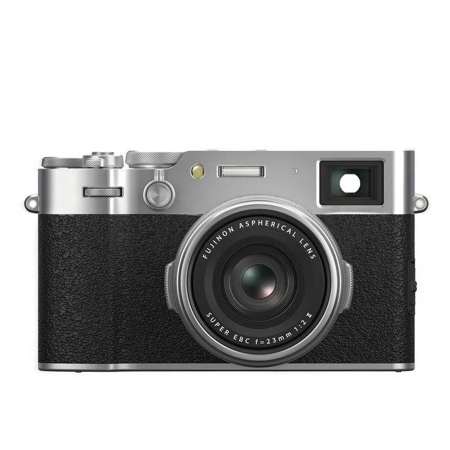
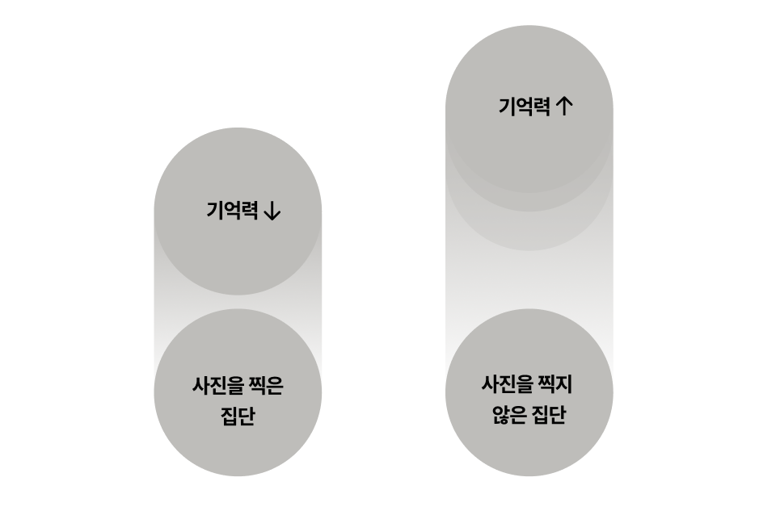
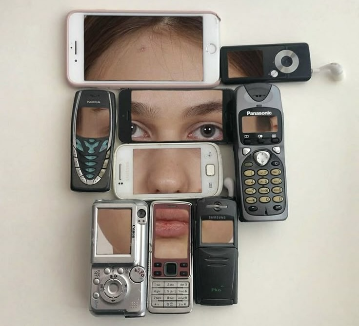

"사진으로 안 남겨두면 기억을 못해?"
@기억보다 기록에 집착하는 사람들
Inspired by Linda Henkel,
Photo-Taking Impairment Effect (2013)
모든 것을 사진으로 남겨두는 시대
"여행, 콘서트 등 모두 사진으로 남겨둬야 안심 돼요"
"MZ샷이 대유행, 인스타그램에 사진들 올려야해요"
"오래오래 추억 하기에는 사진만한게 없더라구요"
기억보다 ‘기록’에 집착하는 시대. 사람들은 지금 더 많은 순간을 렌즈로 저장하고 있습니다.
core
memory
anxiety
핵심 기억 불안
소중한 순간을 기록하지 않으면
사라질까 봐 불안한 마음

1.불완전한 기억
인간의 기억은 재구성되며, 시간이 지날수록
계속해서 변형된다. 때문에 사람들은 잊는게
두려워 사진으로 붙잡으려 한다.
하지만 사진이 그 순간의 감정까지 저장할
수 있는 것은 아니며 풍경은 담더라도
마음의 온도는 담지 못한다.

2.SNS 집착
사진이 없으면 존재하지 않은 것처럼
느껴지는 사회에 살고있는 우리는
SNS에 올려야 ‘나의 하루’를 증명할 수
있다고 믿는다 하지만 그것들은 남을 위한
기억일뿐 나 자신을 위한 기억은 오히려 흐려진다.

@Linda Henning, psychologist at Pace University in the United States
"사진이 오히려 기억을 방해한다?"
미국 페이스 대학교의 심리학자 린다 헤닝의 '포토테이킹 임팩트 효과'연구는 참가자들에게 박물관 전시물을 관찰하게 한 뒤 일부는 사진을 찍고, 일부는 눈으로만 관찰하게 했을 때, 사진을 찍은 집단이 그렇지 않은 집단보다 세부 내용을 훨씬 덜 기억했음을 보여준다. 이는 인간의 뇌가 사진을 찍는 순간 "기억 저장을 카메라에 위임했다"고 착각하기 때문이다. 즉, 주의 자원이 외부 도구(카메라)에 분산되며 결과적으로 '사진을 찍는 행위' 자체가 기억의 깊이를 얕게 만들고, 실제 경험을 단기 기억 수준에 머물게 하는 것이다.
"True memories live beyond the frame."
"진짜 기억은 카메라에 남지 않는다"
신경심리학 연구에 따르면 인간의 뇌는 감정이 동반된 경험을 더 오래 저장하며, 특히 후각·촉각·청각과 같은 감각 자극이 결합될수록 해마(hippocampus)에서 기억이 더욱 선명하게 강화된다. 하버드 의대의 신경학자 에릭 캔델(EricKandel)은 이러한 감정적 기억이 단순 시각 정보보다 훨씬 오래 지속된다고 설명한다. 결국 그날의 향기, 공기의 온도, 웃음소리와 같은 감각의 흔적들이 사진보다 강력한 기억의 기록으로 남는다.